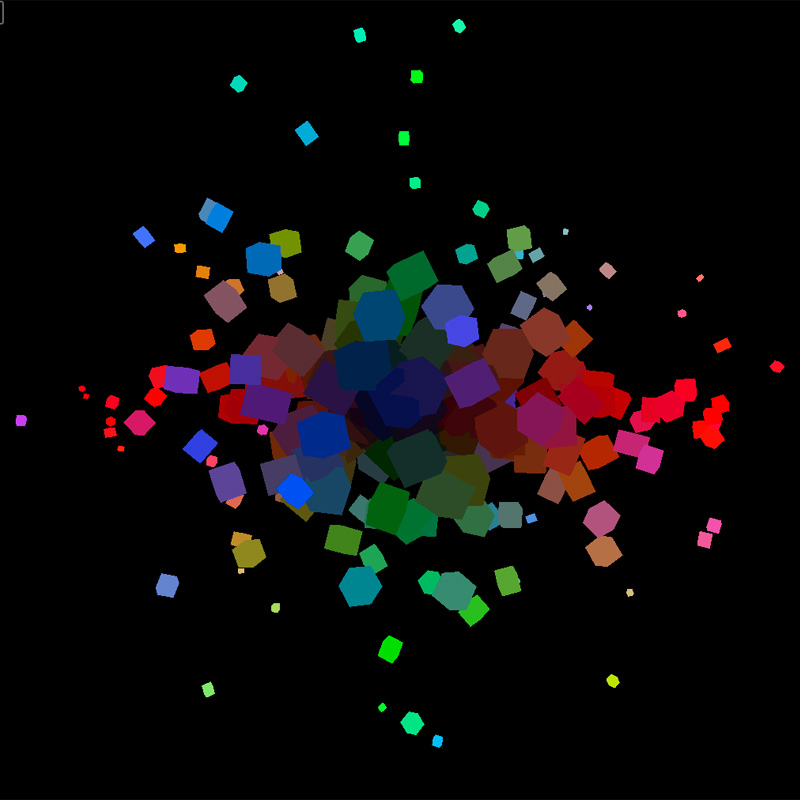

About WebGL
Bobby RoeWhat is it?
Based on OpenGL ES 2.0
(maps closely to the GPU)

The web has a history of transformative changes. CSS gave us real web design, Flash gave us ubiquitous video, Firebug gave us Web Inspectors, jQuery gave us non-painful DOM manipulation, and so on. None of these ideas were new in computing when they debuted, the web merely adapted to fill a need. WebGL is an idea in a similar vein, a base platform for an ecosystem of specialized frameworks on top. - Steven Wittens
What it's not
A 3D engine
Overview
- Intro to the WebGL DOM API
- 2D / 3D, whatever
- Bring your own matrices
- GLSL examples
- do stuff
- references
Intro
(much more involved than other other graphics librariesmassively parallel & awesome)
2006
(Photo of Vlad)
(Photo of FF 4)
some concepts
ex: context.drawThis(); // done.
(diagram) - “more later”
• buffers, switches, state, load-compile-link-use, etc …
Essentials of 3D Graphics
Eric Haines Class on Udacity2D / 3D; whatever
basic workflow
get a context
create *shaders & program
VBOs (& IBOs)
draw
Bring your own matrices
4x4 matrix magic
model
translate + rotate + scale + multiplyprojection
from pixels to clipspaceperspective
fit visible world (frustum into clip space) (tangent)?GLSL
some examples
the programmable part of the GL pipeline
this is where the magic is
what is it?
like c / c++ with helpers for CG(built-in matrices / vectors / functions)
gl_Position & gl_FragColor
(pipeline)
The programable part of the pipeline
ex: does not like to mix ints & floats
Do stuff
“WebGL can make graphics & interactive and introspective by default.” - acko.net
Storytelling & presentation
visualisations, image processinggames
ray casting / clickable objects, physicsart / demos
 particle effectslinks
- watch these: www.udacity.com/course/cs291
- and this: games.greggman.com/game/webgl-how-it-works
- learningwebgl.com/blog/?page_id=1217
- www.shadertoy.com
- acko.net/blog/making-mathbox (webgl usage)
stuff to explore:
- post-processing (images effects w/ FBOs)
- shadows
- more shader programming
- clickable stuff - ray-casting
- particle effects
- optimisations